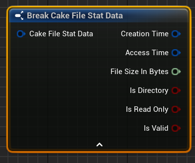

Files
Overview
Cake IO provides CakeFile objects to allow file manipulation in a type-safe and ergonomic manner.
Source Code Information
Basic Usage
The following covers some of the core interfaces required to utilize and manipulate CakeFile objects.
Building CakeFile Objects
The simplest way to create an FCakeFile object is via its constructor, which accepts a single FCakePath that holds the path the file.
We can create a new CakeFile object via BuildCakeFile, passing a CakePath that holds the file path the CakeFile should target:
If we need to make an empty CakeFile object whose path will be determined later, we can use Build Cake File Empty:
Tip
Cake IO offers automatic string to CakePath conversions. You can pass a string to any function that expects a CakePath argument and it will automatically create a CakePath object from the string for you:
Accessing the File Path
FCakeFile stores its full file path internally as an FCakePath. We can gain access to that FCakePath object via operator* and GetPath:
auto PrintPath = [](const FCakePath& Path)
{ UE_LOG(LogTemp, Warning, TEXT("Path String: [%s]"), **Path); };
FCakePath EnemiesDbPath{ TEXTVIEW("C:\\Game\\Data\\Enemies\\enemies_full.db") };
FCakeFile EnemiesDbFile{ EnemiesDbPath };
PrintPath(*EnemiesDbFile);
PrintPath(EnemiesDbFile.GetPath());
If we just need to access the path string itself, we can use the convenience member function GetPathString:
auto PrintPathStr = [](const FString& PathStr)
{ UE_LOG(LogTemp, Warning, TEXT("Path String: [%s]"), *ExtStr); };
FCakePath EnemiesDbPath{ TEXTVIEW("C:\\Game\\Data\\Enemies\\enemies_full.db") };
FCakeFile EnemiesDbFile{ EnemiesDbPath };
PrintPath(EnemiesDbFile.GetPathString());
We can check if an FCakeFile object's file path is empty via PathIsEmpty:
When we need to read a CakeFile's path as a string, we can use GetPathString:
If we want a copy of a CakeFile's path as a CakePath, we can use ClonePath:
To check if a CakeFile's path is empty, we can use PathIsEmpty:
Modifying the File Path
We can change the file path an FCakeFile object represents via SetPath, which takes an FCakePath to copy its path.
FCakePath EnemiesDbPath{ TEXTVIEW("C:\\Game\\Data\\Enemies\\enemies_full.db") };
FCakeFile EnemiesDbFile{ EnemiesDbPath };
FCakePath NewEnemiesDb{ TEXTVIEW("X:\\Extra\\Enemies\\enemies_new.db") };
EnemiesDbFile.SetPath(NewEnemiesDb);
To use move semantics, we can use StealPath:
FCakePath EnemiesDbPath{ TEXTVIEW("C:\\Game\\Data\\Enemies\\enemies_full.db") };
FCakeFile EnemiesDbFile{ EnemiesDbPath };
FCakePath NewEnemiesDb{ TEXTVIEW("X:\\Extra\\Enemies\\enemies_new.db") };
EnemiesDbFile.StealPath(MoveTemp(NewEnemiesDb));
Note
Copy / Move constructors also can be used to model the exact same behavior. Use whichever better aligns to your style guidelines.
When we want to clear the file path contents of an FCakePath, we can call ResetPath:
FCakePath EnemiesDbPath{ TEXTVIEW("C:/Game/Data/Enemies/enemies_full.db") };
FCakeFile EnemiesDbFile{ EnemiesDbPath };
EnemiesDbFile.ResetPath();
const bool bFileIsEmpty{ EnemiesDbFile.PathIsEmpty() }; // => true
FCakePath EnemiesDbPath{ TEXTVIEW("C:/Game/Data/Enemies/enemies_full.db") };
FCakePath NewEnemiesDb { TEXTVIEW("X:/Extra/Enemies/enemies_new.db") };
FCakeFile EnemiesDbFile{ EnemiesDbPath };
EnemiesDbFile.ResetPath(NewEnemiesDb.QueryPathString().Len());
const bool bFileIsEmpty{ EnemiesDbFile.PathIsEmpty() }; // => true
To change the file path of an existing CakeFile object, we use SetPath:
To clear any path in an existing CakeFile object, we use ResetPath:

Note
The parameter NewReservedSize can be used to reserve a minimum size for the internal path string. It is optional and should be left at 0 whenever you don't need to specify a reserve size.
Accessing the File Name
To get the file name of a CakeFile object as a string, we use CloneFileName:
auto PrintFileName = [](const FString& FileName)
{ UE_LOG(LogTemp, Warning, TEXT("File Name: [%s]"), *FileName); };
FCakePath EnemiesDbPath{ TEXTVIEW("C:\\Game\\Data\\Enemies\\enemies_full.db") };
FCakeFile EnemiesDbFile{ EnemiesDbPath };
FString FileName{ EnemiesDbFile.CloneFileName() };
PrintFileName(FileName);
Info
There are other functions for generating different versions of a filename (e.g., one without its file extension data). For more information, please see the File Name Types section.
Accessing the File Extension
To get the file extension from a CakeFile's file path we use CloneFileExt, which returns a CakeFileExt object:
auto PrintFileExt = [](const FString& FileExt)
{ UE_LOG(LogTemp, Warning, TEXT("File Ext: [%s]"), *FileExt); };
FCakePath EnemiesDbPath{ TEXTVIEW("C:\\Game\\Data\\Enemies\\enemies_full.db") };
FCakeFile EnemiesDbFile{ EnemiesDbPath };
FCakeFileExt DbExt{ EnemiesDbFile.CloneFileExt() };
PrintFileExt(*DbExt);
To get the file extension as a string, we can use CloneFileExtString:
auto PrintFileExt = [](const FString& FileExt)
{ UE_LOG(LogTemp, Warning, TEXT("File Ext: [%s]"), *FileExt); };
FCakePath EnemiesDbPath{ TEXTVIEW("C:\\Game\\Data\\Enemies\\enemies_full.db") };
FCakeFile EnemiesDbFile{ EnemiesDbPath };
FString DbExt{ EnemiesDbFile.CloneFileExtString() };
PrintFileExt(DbExt);
File Equality
File equality mirrors Path equality: two File objects are equal if they refer to the same file on the filesystem.
FCakeFile uses operator== and operator!= for equality comparisons.
FCakePath EnemiesDbPath{ TEXTVIEW("C:\\Game\\Data\\Enemies\\enemies_full.db") };
FCakeFile EnemiesDbFile{ EnemiesDbPath };
FCakePath ItemsDbPath{ TEXTVIEW("C:/Game/Data/Items/items_full.db") };
FCakeFile ItemsDbFile{ ItemsDbPath };
const bool bAreEqual { ItemsDbFile == EnemiesDbFile }; // => false
const bool bAreNotEqual{ ItemsDbFile != EnemiesDbFile }; // => true
To check if two CakeFile objects are equal, we use IsEqualTo:
To check if two CakeFile objects are not equal, we use IsNotEqualTo:
IO Operations
Warning
The following IO operation examples show only minimal error handling; this is to keep the focus on core object usage and reduce the complexity of the example code. While there is nothing inherently wrong with this minimal error handling style, do not view it as a recommendation! See Error Handling for a detailed examination of error types and error handling strategies.
Note
The following section involves the use of various Cake Policy enums. If you are unfamiliar with a policy, please refer to the Policies section for a detailed introduction to each policy.
File Existence
To check if a CakeFile exists on the filesystem, we can use Exists:
Creating Files
Cake IO makes a distinction between writing to a file that does not exist (file creation) and writing to a file that already exists (file writing). The following file creation interfaces are meant to be used when a file does not exist. These functions will fail if the file already exists on the filesystem. If the file already exists, use one of the Write functions instead.
To create a text or binary file, we use CreateTextFile or CreateBinaryFile respectively.
FCakePath IntDir{ FPaths::ProjectIntermediateDir() };
FCakeFile FileText { IntDir / FCakePath{ TEXTVIEW("controls.txt") } };
FCakeFile FileBinary{ IntDir / FCakePath{ TEXTVIEW("stats.bin") } };
FString SourceDataText { TEXT("This is the source data.") };
TArray<uint8> SourceDataBytes{ 0x99, 0x98, 0x97, 0x96 };
if (!FileText.CreateTextFile(SourceDataText))
{
UE_LOG(LogTemp, Error, TEXT("Failed creating example text file."));
}
if (!FileBinary.CreateBinaryFile(SourceDataBytes))
{
UE_LOG(LogTemp, Error, TEXT("Failed creating example binary file."));
}
Note
This function takes an optional FCakeSettingsNewItem settings struct. More details can be found here.


If a file already exists, we generally should use the WriteTextFile or WriteBinaryFile interfaces. However, there are convenience functions that will either create the file if it does not exist or overwrite the file if it does exist via CreateOrWriteTextFile and CreateOrWriteBinaryFile:
FCakePath IntDir{ FPaths::ProjectIntermediateDir() };
FCakeFile FileText { IntDir / FCakePath{ TEXTVIEW("controls.txt") } };
FCakeFile FileBinary{ IntDir / FCakePath{ TEXTVIEW("stats.bin") } };
FString SourceDataText { TEXT("This is the source data.") };
TArray<uint8> SourceDataBytes{ 0x99, 0x98, 0x97, 0x96 };
if (!FileText.CreateOrWriteTextFile(SourceDataText))
{
UE_LOG(LogTemp, Error, TEXT("Failed creating example text file."));
}
if (!FileBinary.CreateOrWriteBinaryFile(SourceDataBytes))
{
UE_LOG(LogTemp, Error, TEXT("Failed creating example binary file."));
}
Deleting Files
To attempt to delete the file a CakeFile references, we use DeleteFile:
This function has an DeleteFile parameter (optional in C++) that determines if read only files can be deleted.
Note
In the event that the file does not exist, DeleteFile will return a No Op outcome value.
File Read/Write Operations
Cake Files provide interfaces for handling files as text files or binary files. Text files will use string-like objects for read/write operations, and binary files will use TArray<uint8>.
Reading File Data
There are two approaches to reading file data from an FCakeFile object. We will explore these approaches through examples of reading a text file.
The first approach we can use is reading the file data into a pre-existing buffer:
FCakePath IntDir { FPaths::ProjectIntermediateDir() };
FCakeFile FileText{ IntDir / FCakePath{ TEXTVIEW("controls.txt") } };
FString TextData{};
if (FileText.ReadTextFileToBuffer(TextData))
{
UE_LOG(LogTemp, Warning, TEXT("Text File Data: [%s]"), *TextData);
}
ToBuffer variants of reading file data will return an FCakeResultFileIO, and the buffer will contain the file data assuming the read operation succeeds.
Tip
Reading to a buffer is often the right strategy if you plan to re-use the buffer across multiple reads and want to minimize reallocations. The ToBuffer functions ensure that they never shrink the buffer or reset it via move semantics.
The other approach is to have the file data and operation result returned in a CakeOrder type via ReadTextFile:
FCakePath IntDir { FPaths::ProjectIntermediateDir() };
FCakeFile FileText{ IntDir / FCakePath{ TEXTVIEW("controls.txt") } };
TCakeOrderFile<FString> ReadText{ FileText.ReadTextFile() };
if (ReadText.Result.IsOk())
{
UE_LOG(LogTemp, Warning, TEXT("Text File Data: [%s]"), *ReadText.Order);
}
TCakeOrderFile which sends back FCakeResultFileIO result types, and our template type is FString since we're trying to get the text data as a string. For more details on CakeOrders and how to use them, please see this section.
For completeness, here is the equivalent code for binary files:
FCakePath IntDir { FPaths::ProjectIntermediateDir() };
FCakeFile FileBinary { IntDir / FCakePath{TEXTVIEW("data.bin")} };
TArray<uint8> BinaryDataBuffer{};
if (FileBinary.ReadBinaryFileToBuffer(BinaryDataBuffer))
{
// ... Use the data
}
TCakeOrderFile<TArray<uint8>> ReadBinary{ FileBinary.ReadBinaryFile() };
if (ReadBinary.Result.IsOk())
{
// ... Use the data
}
To read a file's data as text, we use Read Text File:
To read a file's data as binary data (an array of bytes), we use Read Binary File:
Writing Data to Files
The writing interfaces are designed to be used on preexisting files whose contents we want to overwrite or append to. These functions will fail if the file does not exist on the filesystem. If the file does not exist, use one of the Create functions instead.
To overwrite a file's contents, we can use WriteTextFile or WriteBinaryFile:
FCakePath IntDir { FPaths::ProjectIntermediateDir() };
FCakeFile FileBinary { IntDir / FCakePath{TEXTVIEW("data.bin")} };
FCakeFile FileText { IntDir / FCakePath{TEXTVIEW("controls.txt")} };
if (!FileText.WriteTextFile(TEXTVIEW("This will fully overwrite any old data in FileText.")))
{
UE_LOG(LogTemp, Error, TEXT("Failed overwriting text in FileText. Aborting."))
}
if (!FileBinary.WriteBinaryFile( { 0x80, 0x80, 0x80, 0x80 }))
{
UE_LOG(LogTemp, Error, TEXT("Failed overwriting data in FileBinary. Aborting."))
}

To append data to a file's contents instead of overwriting it, we can use AppendTextFile or AppendBinaryFile:
FCakePath IntDir { FPaths::ProjectIntermediateDir() };
FCakeFile FileBinary { IntDir / FCakePath{TEXTVIEW("data.bin")} };
FCakeFile FileText { IntDir / FCakePath{TEXTVIEW("controls.txt")} };
if (!FileText.AppendTextFile(TEXTVIEW("This will be appended to the end of FileText's data.")))
{
UE_LOG(LogTemp, Error, TEXT("Failed appending text to FileText. Aborting."))
}
if (!FileBinary.AppendBinaryFile( { 0xEA, 0xD }))
{
UE_LOG(LogTemp, Error, TEXT("Failed appending data to FileBinary. Aborting."))
}
Copying Files
We can copy a CakeFile's referenced file to another location via CopyFile. This takes an CakePath argument that represents the source directory into which the file should be copied.
If we want the copied file to have a file name that differs from the source file, we can use CopyFileAliased:
FCakeFile SpellsDb { FCakePath{TEXTVIEW("abilities/magic/spells.db")} };
FCakePath ArchiveDir{ FCakePath{TEXTVIEW("/y/archive/spells_backup")} };
if (!SpellsDb.CopyFileAliased(ArchiveDir, TEXTVIEW("spells_archive.db")))
{
UE_LOG(LogTemp, Warning, TEXT("Failed copying spells database to archive dir."))
}
In the example above, assuming the copy succeeds, the copied file's path will be /y/archive/spells_backup/spells_archive.db.
Moving Files
It is important to understand that a move is actually a compound IO operation -- a source file is copied to the destination, and then the source file is deleted at its original location. This is important to keep in mind when assessing the outcome values returned by failed moves -- in terms of IO operations, a move could fail during the copy operation or the delete operation, but there is no dedicated outcome for a "move" failure.
We can move a file to another location via MoveFile. This takes an CakePath argument that represents the source directory into which the file should be moved.
Just like copy interface, we can also change the name of the moved file via MoveFileAliased:
FCakeFile SpellsDb { FCakePath{TEXTVIEW("abilities/magic/spells.db")} };
FCakePath ArchiveDir{ FCakePath{TEXTVIEW("/y/archive/spells_backup")} };
if (!SpellsDb.MoveFileAliased(ArchiveDir, TEXTVIEW("spells_archive.db")))
{
UE_LOG(LogTemp, Warning, TEXT("Failed moving spells database to archive dir."))
}
In the example above, assuming the move succeeds, the moved file's path will be /y/archive/spells_backup/spells_archive.db.
Changing File Names
Cake File objects have various functions to aid us in changing their associated file's name on the filesystem.
Info
In all of the following functions, the second argument (optional in C++) is an OverwriteItems policy which controls whether or not we can overwrite an existing file if one with the desired name already exists in the same directory.
We can change the entire file's name using ChangeFileName:
We can change just the file extension using ChangeFileExt, passing a CakeFileExt object that holds the desired file extension:
In the example above, assuming the change succeeds, the final extension will be .bin.db.
Finally, we can change the trailing file extension component using ChangeFileExtSingle, passing a CakeFileExt object that holds the desired file extension:
In the example above, assuming the change succeeds, the final extension will be .cdr.txt.
Note
For more details regarding file extensions and their classifications (multi / single), please see this section.
File OS Stat Information
The Query family of functions allows us to gain os information about a particular file, such as its size in bytes or its last modified timestamp.
Warning
It is imperative that you ensure that a particular Query operation has succeeded without error before using any value returned by these functions. The values are only in a valid state when the associated Query function indicates success.
To get all OS stat info for a CakeFile object, we use QueryStatData
Note
The following functions all return the template struct TCakeOrderFile. It is a lightweight struct that bundles an FCakeResultFileIO and an associated payload together. The payload's type varies based upon what the caller wishes to receive from a target FCakeFile. For more details, read this section.
QueryStatData returns a TCakeOrderFile whose payload is the Unreal type FFileStatData.
FCakeFile SrcGoblin{ FCakePath{TEXTVIEW("enemies/ai/goblin.cpp")} };
if (TCakeOrderFile<FFileStatData> StatData = SrcGoblin.QueryStatData())
{
FFileStatData& DataUnwrapped = *StatData;
UE_LOG(LogTemp, Warning, TEXT("StatData file size: [%d] bytes."), DataUnwrapped.FileSize);
UE_LOG(LogTemp, Warning, TEXT("StatData access time: [%s]"), *DataUnwrapped.AccessTime.ToString());
UE_LOG(LogTemp, Warning, TEXT("StatData creation time: [%s]"), *DataUnwrapped.CreationTime.ToString());
}
QueryStatData returns a boolean indicating whether or not the stat data was successfully retrieved, and a CakeFileStatData which holds the stat info. It is imperative you check that the stat data is valid, otherwise you will be using incorrect information. You can check via the GotValidStatData flag returned by the function or by the member field IsValid in the CakeFileStatData struct itself.

Note
CakeFileStatData is just a Blueprint friendly version of Unreal's FFileStatInfo, which is not exposed to Blueprint.
We can also query individual stats if we don't need all the data that QueryStatData provides.
We can attempt to retrieve the size of a file via QueryFileSizeInBytes:
We can attempt to retrieve the last modified timestamp via QueryTimestampLastModified, which gives us back an FDateTime indicating the time the file was last modified.
We can also try to change the last modified time to a custom value via ChangeTimestampLastModified.
FCakeFile SrcGoblin{ FCakePath{TEXTVIEW("enemies/ai/goblin.cpp")} };
FDateTime NewMod{ FDateTime::Now() };
NewMod -= FTimespan::FromDays(1.0);
if (SrcGoblin.ChangeTimestampLastModified(NewMod))
{
UE_LOG(LogTemp, Warning, TEXT("New mod time: [%s]"), *NewMod.ToString())
}
else
{
UE_LOG(LogTemp, Warning, TEXT("Failed modifying the source file's modified timestamp."))
}
We can attempt to retrieve the last accessed timestamp via QueryTimestampLastAccessed, which gives us back an FDateTime indicating the last time the file was accessed:
Changing File Permissions
We can change whether a file is marked as read-only via ChangeFilePermissions:
This function takes an ECakeFilePermissions enum argument, which allows to specify between ReadOnly or ReadWrite:
Advanced Usage
Advanced File Name Extraction
Cake File objects allow callers to clone its associated file name into three different forms. It is important to understand how Cake IO classifies file names before we examine the clone interfaces.
File Name Types
Cake IO classifies file names into three different categories.
Using the file name info.cdr.txt as an example, we can view the file name according to three different categories:
- Full Name: The file name with all of its extensions:
info.cdr.txt - Root Name: The file name with its trailing extension removed:
info.cdr - Bare Name: The file name without any extensions:
info
Note
When FileName is used by itself, Full Name is implied. Thus, CloneFileName will clone the full file name, whereas CloneFileNameBare will clone the bare file name.
Advanced File Name Interfaces
Hint
CakeFile objects do not cache any data about themselves to keep them as lightweight and low-cost as possible. Thus, all functions that extract the file name return an FString. If you are going to reuse the file name in multiple locations, cache the result whenever possible for best performance.
When we want to get the full name of the file, we need to use CloneFileName:
In the example above, the returned file name will be orc_warrior.gen.cpp.
To get the root file name, we need to use CloneFileNameRoot:
In the example above, the returned file name will be orc_warrior.gen.
Finally, when we want the bare file name, we can use CloneFileNameBare:
In the example above, the returned file name will be orc_warrior.
Low-Level FileHandles
Note
Only native Cake File objects can get access to low-level file handles.
There may be situations where you direct access to a low-level file handle. To get a unique pointer to an IFileHandle, use OpenFileHandleUnique. This function takes one parameter, an FCakeSettingsFileHandle settings struct that determines the open / write mode the file handle should use.
FCakeFile SrcOrc{ FCakePath{TEXTVIEW("enemies/orc_warrior.gen.cpp")} };
TUniquePtr<IFileHandle> FileHandle{
SrcOrc.OpenFileHandleUnique({
.OpenMode = ECakeFileOpenMode::ReadAndWrite,
.WriteMode = ECakeFileWriteMode::OverwriteData })
};
if (FileHandle.IsValid())
{
// ...
}
Warning
OpenFileHandleUnique will return an invalid pointer when the opening fails, so always check to ensure the pointer is valid before using it!